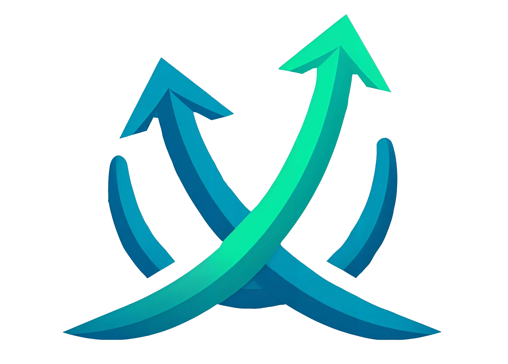

Sistemas digitales de crecimiento para negocios de Salud y Bienestar. Donde la estrategia se transforma en ventas.
La marca actual vive cerca del territorio tech/SaaS: flechas en gradiente azul→verde, landing dark con verde neón. El posicionamiento deseado es premium + humano + fresco, con nicho principal en Salud y Bienestar. Este documento explora cuatro direcciones contrastadas para mover la marca desde "otra agencia de growth" hacia un sistema reconocible y maduro.

El símbolo actual trabaja duro pero compite en un espacio saturado.
Rationale
Conserva la equity visual de las flechas cruzadas, pero las reduce a dos trazos geométricos planos. Sin 3D, sin gradiente saturado. El azul se oscurece hasta casi negro marino; el verde migra a mint maduro. Tipografía Geist: tecnológica pero humanista.
Ideal si quieres mantener reconocimiento con los clientes actuales mientras ganas autoridad.
Geist combina la precisión técnica de una mono con la calidez de una humanista. Para data-heavy layouts y headlines cortos.
Rationale
Pivot radical hacia el nicho Salud y Bienestar. Paleta salvia + crema + bronce. Tipografía Fraunces (serif contemporánea con cuerpo cálido). El símbolo abandona las flechas y propone un brote/semilla como metáfora de crecimiento orgánico.
Ideal si vas a doblar la apuesta por Salud y Bienestar como único vertical.
Fraunces aporta autoridad editorial sin rigidez. Inter mantiene la UI limpia. El contraste serif/sans lee como magazine.
Rationale
Abandona el símbolo por completo. La marca vive en un wordmark con un slash / entre "ecom" y "garo" — una seña de autoría, como "by ecom/garo". Inspirado en el minimalismo confiado de Linear, Vercel y Stripe.
Ideal si quieres que la marca se sienta moderna sin esfuerzo. El sistema carga el peso en tipografía y espacio negativo.
Un solo tipo haciendo todo el trabajo. Tracking apretado en display, abierto en body. El slash como único ornamento.
Rationale
El símbolo es un bucle continuo — una metáfora del sistema 3C (Captar → Convertir → Crecer → Captar). No hay principio ni fin, solo flujo. Tipografía Instrument Serif: alto contraste, italics dramáticos, muy editorial.
Es la dirección más memorable y distintiva. Si funciona, posiciona ecomgaro como una marca culta, no una agencia más.
Instrument Serif en display con sus cursivas dramáticas. Inter en body. Números tabulares para data. Tono: revista de negocios inteligente.
Si eliges una
Profundizamos: logo final vectorizado, sistema tipográfico completo, tokens de color, plantillas de LinkedIn/Instagram, rediseño de la landing.
Si quieres mezclar
Podemos combinar (ej. símbolo de Loop + paleta de Ascent + tipografía de Signal). Usa los Tweaks para iterar en vivo.
Si ninguna convence
Dime qué te acerca y qué te aleja de cada una. Con 3–5 notas puedo hacer una V02 mucho más afinada.